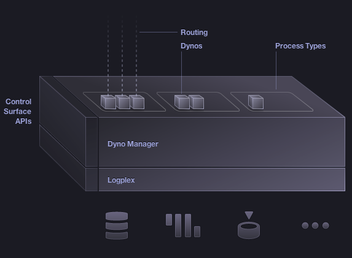

Введення: Як
робить Heroku
Опубліковано Jon
Люди, в свойому тяжінні до знань, завжди бажають знати як щось робить.
Ми сидимо в наших спальнях, на кухнях та в гаражах, розбираючи речі на шматки жадібними руками, роздивляючись частини до мерехтіннях в очях, по мірі того, як наші пальці повертають та повертають ії, здогадуючись, що вони роблять, як вони роблять те, що вони роблять – в надії, що все це ще робить, без тієї зовсім зайвої частини, що вже, здається, не підходить.
Введення: Як робить Heroku
Як робить Heroku слідує цім добре протоптаним шляхом. Він розкриває платформу platform, розкладаючи його голі нутрощі на столі, дозволяючи нам сгуртуватись колом та подивитись, що усередині.
Подивіться, та побачте мускулярний маршрутизатор, прокачуючий пакети унутрь та зовні. Подивіться сюди, і ви побачите діно менеджер в усій славі, безперешкодно оркестручий платформою.
Дивіться далі, і побачите несперевно архивуючий біти даних WAL-E .
Та далі, відзначте діно: як мітохондрія, вони є електростанцією платформи, виконуючи ваши застосування.
Історія
Подібно вкладу Galen в ранішнє розуміння системи циркуючих людей, поважні діаграми Heroku Як це робить були інструментами в покращення нашого розуміння Heroku.

Цей монумент прогрессу проваджує піонерську мапу платформи Heroku. Викреслені рукою хірурга, її стильні та гладкі лінії стягуюють похвали зі всього світу, тоді як змістовний текст надає деяку втіху тім. хто хочу знати більше, хоче зрозуміти як це робить.
Просуваємося вперед
Але ми продовжуємо бажати. Як, насправді, кістка
стопи приєднана до бірцевої кістки? Як, насправді, мій код
трансформується з git push в slug
в release
в щось, що виконується, використовує змінні
конфігурації та сторонні додатки,
при тому уніфікуючи журнали через logplex,
та виконуючи набір dynos,
що контролюються через dyno
manager?
Як робить Heroku призначений для відповідей на ці питання.
Стаття надає високрорівневий, точний, технічний огляд платформи Heroku.
Описуючи платформу потребує деякого балансу. Занадто детально, і ви загубитесь в болоті деталей. Дуже загально, і ви отримаєте тільки карикатуру.
Ми сподіваємось, ви оціните цю боротьбу, і результуючий текст - що є щирим на посилання на інші документи, що надають глибший матеріал.
Два погляда: статичний та динамічний
Це є складним, описувати організм. Чи ви описуєте частини тіла, та як вони пасують разом (статичний погляд, погляд часу розгортання), або ви описуюте проходження крові та електрики (динамічний погляд, погляд часу виконання)?
Як робить Heroku описує обоє - використовуючи слова - в історії, що проводить вас через мандри головних компонент платформи. Послидовне читання є необхідним (деяккі компоненти зав’язані на інші), але в кінці ви повинні мати досить солідне розуміння обох точок зору, статичної та динамічної.
Ви маєте бути нагороджені кращим розумінням як це все працює разом - як ви проходите від коду до бітів що виконуються.
Вибір дизайну
This description of the Heroku platform is radically different from its predecessor. Here are some of the design choices that went into its creation:
- Audience: we're assuming a much more technically savvy audience in this description. You're tinkerers, makers. You want to know how stuff works.
- Timing: this article is an optional read, but a really great read after deploying your first couple of apps.
- Language: while describing the platform we found a few terms that were a little too nebulous, so we changed them. The "Routing Mesh" is now simply called "routers". "Dyno Manifold" is now called a "Dyno manager". Both concisely describe the components, and don't require you to look up additional descriptions.
- Words: you will have to read - instead of gaze at awesome pictures. We'd love to iterate on this, and move it towards something that has a little more visual allure - but hope you instead enjoy an accuracy and detail difficult to depict in pretty pictures.
Please use the feedback box at the bottom of the article to send me any feedback.
Thank you!
Jon